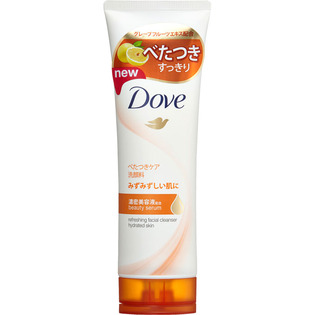

返回列表
产品名称：ダヴ フレッシュ 洗顔料

ユニリーバ・ジャパン ダヴ フレッシュ 洗顔料 １３０ｇ
メーカー ユニリーバ・ジャパン
JANコード 4902111734965
商品の特徴
フレッシュな肌へ
マンダリンオレンジの香り※
※香料配合
プレミアムスキンケア発想
うるおい美容液配合
さっぱりうるおう洗顔料
うるおいを与えさっぱりみずみずしい素肌に
成分・分量
ミリスチン酸
グリセリン
水
PG
水酸化K
パルミチン酸
ステアリン酸
ジステアリン酸グリコール
ラウリン酸
デシルグルコシド
ステアリン酸グリセリル
オレンジ油
ポリクオタニウム-7
酸化Mg
EDTA-2Na
メチルイソチアゾリノン
香料
用法及び用量
-